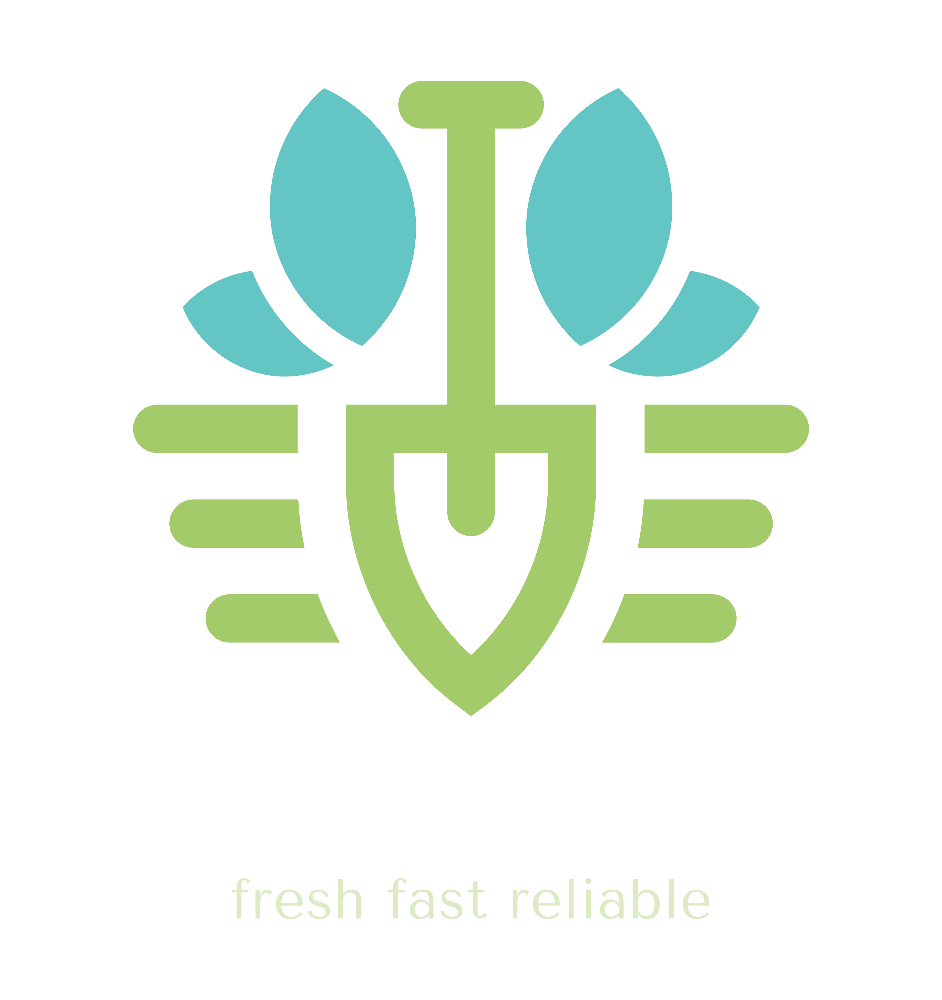

Veggie Mart
we provide fresh fruits, vegetables and nuts which are directly outsourced from farmers are a stored hygienic environments


we provide fresh fruits, vegetables and nuts which are directly outsourced from farmers are a stored hygienic environments

An apple is an edible fruit produced by an apple tree (Malus domestica). Apple trees are cultivated worldwide and are the most widely grown species in the genus Malus.

Mangoes are a fruit that is part of the drupe family. Mangoes havea thin, waxy, red and green skin that covers the outside. Inside,there is a large pit in the middle of the bright orange flesh.Mangoes have a sweet, tangy flavor.

Strawberries are bright red, juicy, and sweet. They're an excellent source of vitamin C and manganese and also contain decent amounts of folate (vitamin B9) and potassium.

An onion, also known as the bulb onion or common onion, is a vegetable that is the most widely cultivated species of the genus Allium. The shallot is a botanical variety of the onion which was classified as a separate species until 2011.
The potato is a starchy food, a tuber of the plant Solanum tuberosum and is a root vegetable native to the Americas. The plant is a perennial in the nightshade family Solanaceae. Wild potato species can be found from the southern United States to southern Chile.

The tomato is the edible berry of the plant Solanum lycopersicum, commonly known as the tomato plant. The species originated in western South America, Mexico, and Central America.
The almond is a species of tree native to Iran and surrounding countries, including the Levant. The almond is also the name of the edible and widely cultivated seed of this tree.

A walnut is the edible seed of any tree of the genus Juglans, particularly the Persian or English walnut, Juglans regia. The fruits of trees in the are often confused with drupes.

The pistachio, a member of the cashew family, is a small tree originating from an area that includes Afghanistan, Central Asia, and Iran. The tree produces seeds that are widely consumed as food.